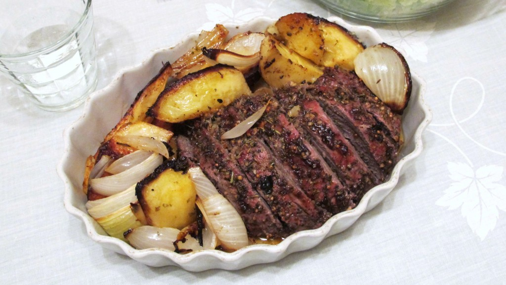

Recetas de la Abuela
Deliciosas recetas caceras
Carne al horno con papas

Ingredientes:
- 1 1/2 kg carne (vacío, road beef, colita de cuadril, paleta, peceto o lo que te guste)
- 1 taza agua tibia
- 1 cda. sal
- 1 cda. pimienta
- 1 taza aceite
- 2 hojas laurel
- manteca para untar la carne
- 1 1/2 kg papas (cotádas a la mitad pueden ser peladas o con cáscara bien lavadas con cepillo)
Preparacion:
- Quitar lo mas que se pueda la grasa a la carne
- Esparcir la manteca sobre toda la superficie de la carne.
- Llevárla a coción en una sartén hasta que se dore de ambos lados, es decir que se selle, para conservar su jugo.
- Colocárla en una asadera para horno, en el centro y todo alrededor las papas , cortadas a la mitad que las hemos mezclado un poco de aceite y sal en un bol.
- En un recipiente mezclar el agua con la sal , la pimienta y por último el aceite, rociar la carne, poner encima las hojas de laurel
- Precalentar el horno a 180ºc.
- Llevar al horno durante 45 minutos, trancurrido ese tiempo veremos como se va tiernizando
- Si vemos que a medida que va cocinando se seca demasiado, preparar un poco mas del agua, sal aceite y pimienta e ir rociando la carne.
- Retirar del horno, antes de servir dejar reposar unos minutos tapado.